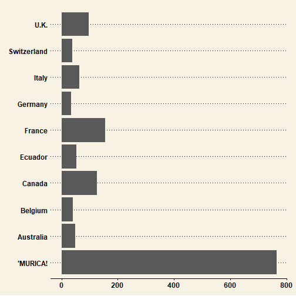
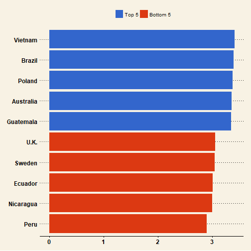
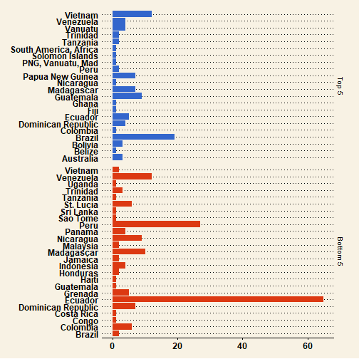
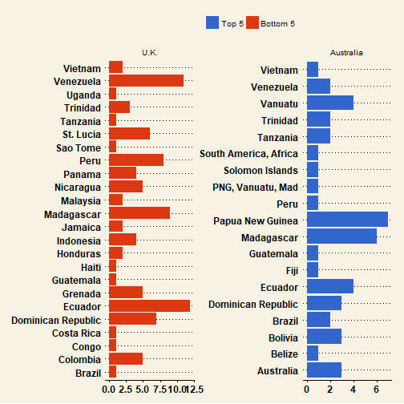
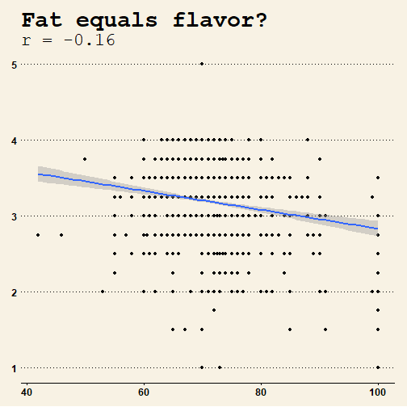
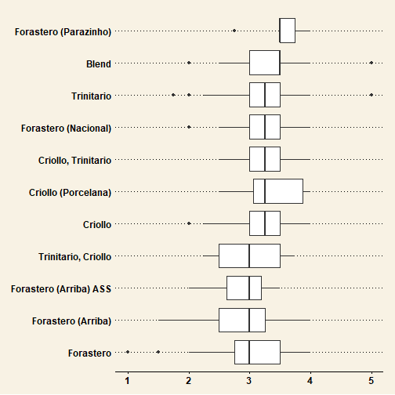

Exploratory Cocoa Analysis
Nathan L
The data
Flavors of Cacao
available at http://flavorsofcacao.com/index.html
Expert ratings of over 1,700 individual chocolate bars, along with information on
- regional origin
- percentage of cocoa
- variety of chocolate bean used
- where the beans were grown
Where are most of the rated bars produced?

Where are the highest and lowest rated bars produced?

...and where do they source their beans?

Perhaps there are more low quality beans from Ecuador, Peru, and Venezuela
You want Brazilian and Vietnamese beans.
Where do Australia (top 5) & U.K. (bottom 5) source their beans?
they don't grow their own

We see Ecuadorean and Venezuelan beans in low rated U.K. bars
Is percentage of cocoa correlated with rating?

Doesn't look like anything to me.
Distribution of ratings by bean types, Top 10

Next time you go to whole foods...
Yay ☺


Nay ☹


Happy eating!